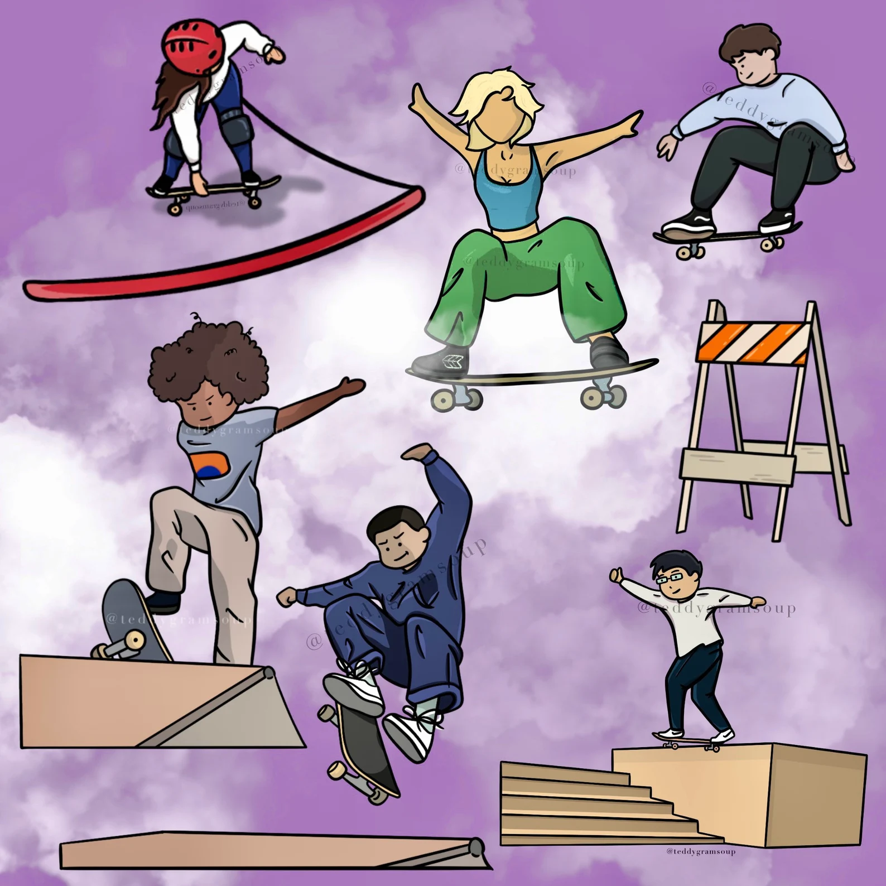

digital art & upcycled clothing
welcome to my secret art page. here you'll find a collection of my digital art and upcycling projects.
explore stuff etsy shopabout the artist
hello! i'm kendra johng, known online as teddygramsoup, a digital artist and upcycler based in utah. i make my own cinnamon rolls and clippy is my spirit animal.
featured etsy product

custom skateboard art commission
i’m so excited to cartoon-ize your skateboarding photo!
etsy shopstuff